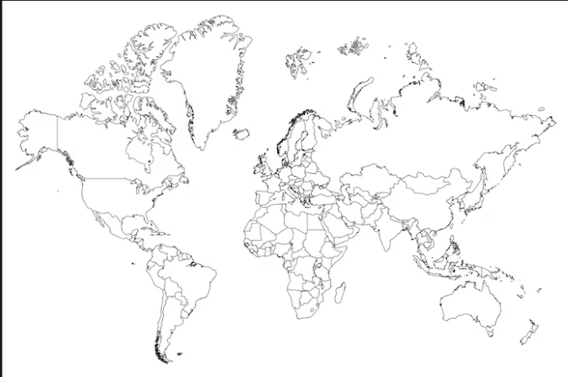
isla 広報チーム 内部資料 · Connect Kindai University
CapCut PC版 操作マニュアル
初めてでも作れる！isla動画編集ガイド
動画フォーマット
縦型ショート動画 9:16（15秒から）
① 素材を読み込む
→
② カット編集
→
③ テキスト追加
→
④ 効果音追加
→
⑤ 書き出し
準備フェーズ — STEP 01 〜 04
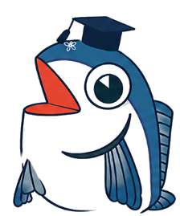
🎓 コネマグ — isla × Connect
はじめまして！isla広報チームの動画編集をサポートするよ。まずCapCutのインストールからはじめよう！難しくないから安心してね👍
- ブラウザで 「CapCut PC」 と検索
- 公式サイト（capcut.com）からダウンロード
- インストーラーを起動してインストール
- Googleアカウントなどでログイン
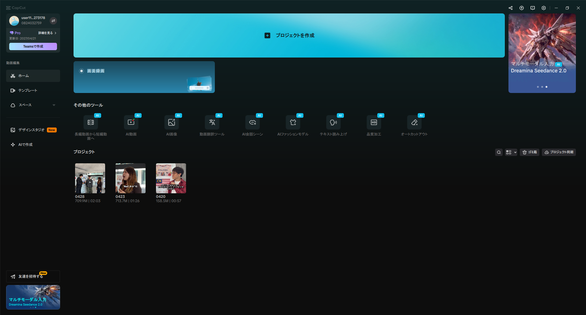
左上にProバッジ
プロジェクトを作成
【スクショ：CapCutを起動したときのホーム画面】
💡
islaはCapCut Pro版を使用しています。ログイン後にProプランが有効になっているか確認してください。
- CapCutを起動
- 左上の 「新しいプロジェクト」 をクリック
- 用途に合った画面比率を選ぶ
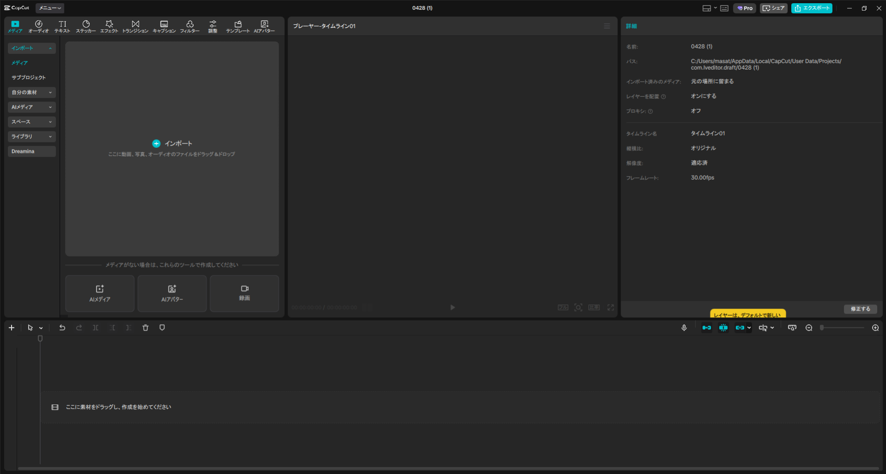
左メニューから操作
インポートボタン
プロジェクト情報
【スクショ：新規プロジェクト作成後の画面】
どの比率を選ぶ？
| 比率 | 用途 | islaでの使用場面 |
|---|
| 9:16（縦） | リール・TikTok・ストーリーズ | イベント告知・ボランティア募集 |
| 16:9（横） | YouTube・スクリーン投影 | インタビュー動画・説明動画 |
| 1:1（正方形） | Instagramフィード | 活動報告・写真まとめ |
🎯 実際にやってみよう
今回は 9:16（縦型） でイベント告知動画を作る想定で進めます。「9:16」を選んでプロジェクトを作成してください。
① Googleドライブから動画をダウンロード
1
ブラウザでGoogleドライブを開き、「共有ドライブ」→「GEC広報部2026」→ 対象フォルダへ移動する
【スクショ：Googleドライブ フォルダ一覧の画面】
2
動画ファイルをクリックしてプレビューを開く → 右上のダウンロードボタン（↓）をクリック
【スクショ：ダウンロードボタンの画面】
💡
ダウンロードしたファイルはPCの「ダウンロード」フォルダに保存されます。
② CapCutへインポート
3
CapCutを起動→ 左上の「インポート」をクリック→ ファイル選択画面で「ダウンロード」フォルダを選択→ ファイルをクリックして「開く」
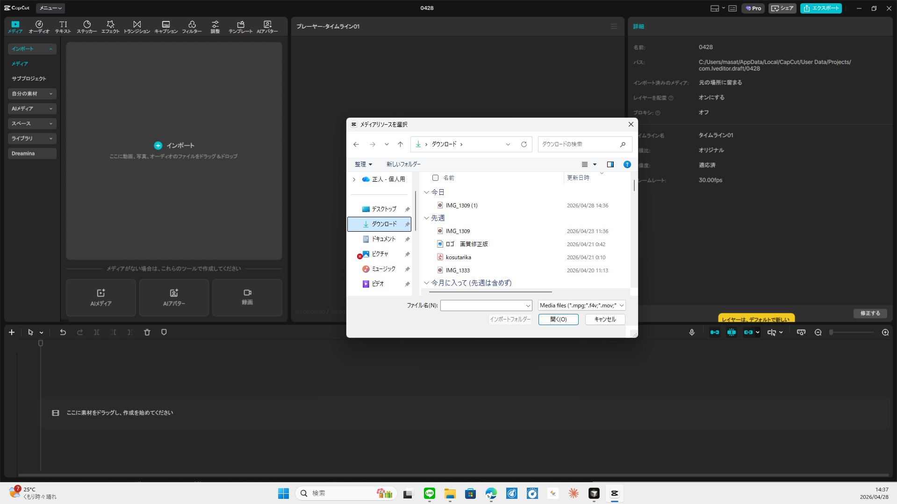
① ダウンロード
② ファイルを選択
③ 開く
【スクショ：CapCut インポートのファイル選択画面】
4
左パネルに動画のサムネイルが表示されたら読み込み完了
【スクショ：メディアパネルに動画が表示された画面】
5
動画サムネイルをタイムラインにドラッグ＆ドロップ
【スクショ：タイムラインに動画が追加された画面】
💡
複数ファイルを選ぶときは Ctrl を押しながらクリック。タイムラインにドラッグする順番が動画の再生順になります。
🎯 実際にやってみよう
Googleドライブの「GEC広報部2026」フォルダからイベント動画を1つダウンロードして、CapCutのタイムラインに追加してみましょう。
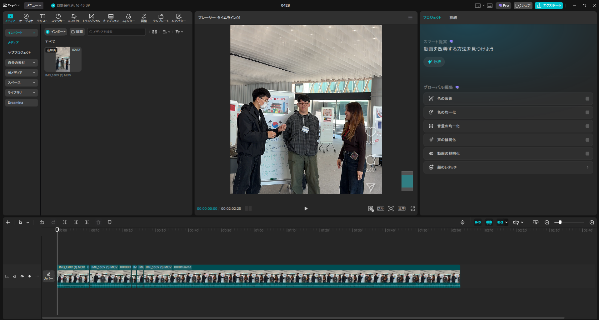
① 左パネル（素材・テキスト）
② プレビュー画面
③ 右パネル（設定）
④ タイムライン
【スクショ：CapCut編集画面の全体】
| エリア | 役割 |
|---|
| 🗂️ 左パネル | 素材・テキスト・BGM・エフェクトを選ぶ場所 |
| ▶️ プレビュー画面 | 今どんな仕上がりか確認する場所 |
| 🎬 タイムライン | 動画の順番・長さ・タイミングを調整する場所 |
| ⚙️ 右パネル | 選択中の素材の細かい設定をする場所 |
編集フェーズ — STEP 05 〜 08
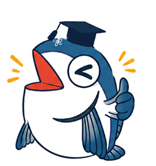
🎓 コネマグ — isla × Connect
準備ができたらいよいよ編集開始！カット編集が動画クオリティを一番左右するから、ここは丁寧にやろう✂️
- タイムライン上のクリップをクリックして選択
- 再生ヘッド（白い縦線）を切りたい場所に移動
- Ctrl + B で分割
- いらない部分をクリックして Delete で削除
1
タイムラインのクリップをクリックして選択する（クリップが青くなればOK）
【スクショ：クリップを選択した状態】
2
再生ヘッド（白い縦線）をカットしたい場所に移動 → Ctrl+B で分割
【スクショ：Ctrl+Bで分割された状態】
3
いらない部分をクリックして選択 → Delete で削除
【スクショ：削除後のタイムライン】
ツールバーでもカット操作ができる
キーボードショートカット一覧
💡
右上のキーボードアイコンからショートカット一覧をいつでも確認できるよ！
分割Ctrl + B
全クリップ一括分割Ctrl + Shift + B
イン点（開始）をマークI
アウト点（終了）をマークO
イン点より左を削除Q
アウト点より右を削除W
素材を有効 / 無効V
元に戻すCtrl + Z
再生・停止スペース
1フレーム移動← / →
🎯 実際にやってみよう（インタビュー動画の場合）
① 動画を再生して「あー」「えーと」などの余分な部分を探す
② その前後で Ctrl+B で分割
③ 余分な部分を Delete で削除
✨ コツ：完璧にやろうとせず、まず大きく不要な部分を削るところから始めよう
1
左パネルの「テキスト」をクリック→ 「デフォルトテキスト」をタイムラインにドラッグ
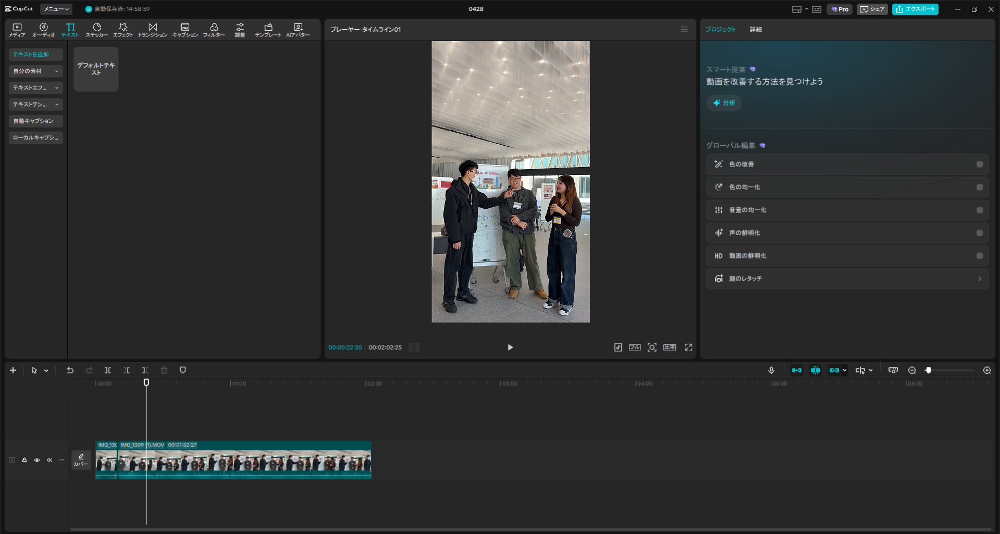
① テキストをクリック
② ここをドラッグ
【スクショ：テキストタブとデフォルトテキスト】
2
タイムラインのテキストクリップをクリック→ 右パネルでフォント・サイズ・色を設定する
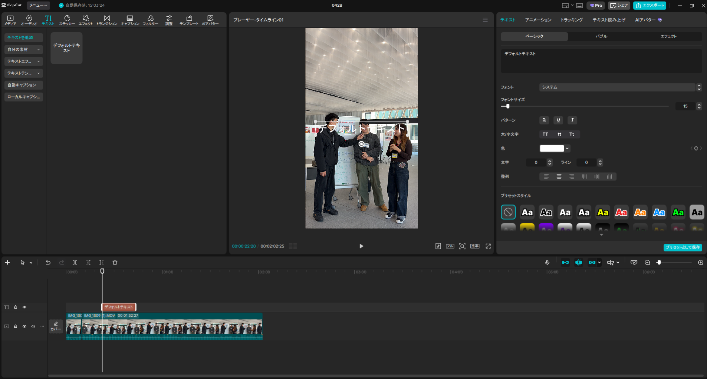
フォントを選ぶ
サイズを変える
色を変える
【スクショ：右パネルのテキスト設定】
💡
islaの字幕設定の目安：フォントは太めのものを選ぶ・サイズは動画の幅に合わせて調整・文字全体は白色に統一する
3
プレビュー画面のテキストをダブルクリックして文字を入力・位置をドラッグで調整
【スクショ：プレビューにテキストが表示された状態】
4
キーワードだけ色を変える：テキストをダブルクリック→ 変えたい単語をドラッグで選択→ 右パネルの「色」でカラーピッカーを開いて色を変更
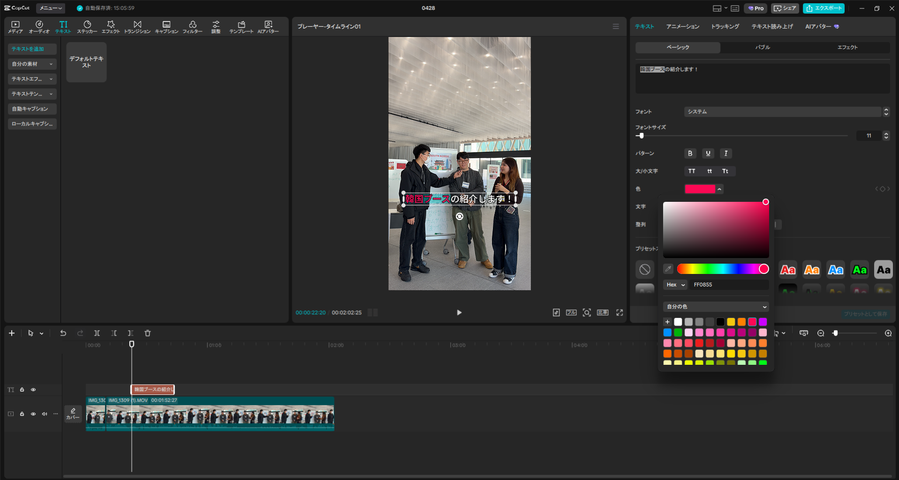
単語を選択
色を変える
【スクショ：「韓国ブース」だけ色を変えた状態】
💡
islaのキーワード強調ルール：
・文字全体は白色に統一する
・料理名・地名などのキーワードだけ 赤 または 黄色 でポイントカラーを入れる
・文字の縁取り（ストローク）は白または黒に統一して読みやすくする
・色の種類は増やしすぎない（多くても2色まで）
isla動画でのテロップ例
インタビュー動画
話しているセリフをそのまま文字に起こす
例：「islaに入ったきっかけは国際交流への興味でした」
→ 話者の名前・所属を白テキストで小さく入れると◎
イベント告知動画
日時・場所・内容を順番に表示
例：「📅 2024年〇月〇日（土）」「📍 〇〇大学 〇号館」
🎯 実際にやってみよう
動画の最初に「isla イベント名」というタイトルテロップを入れてみましょう。フォントは太めのものを選ぶと視認性が上がります。
💡
islaの動画はBGMなし・効果音のみで構成しています。場面の切り替えや単語のイメージに合わせて効果音を使います。
1
左パネルの「オーディオ」→「サウンドエフェクト」をクリック→ 検索欄に「ポン」などと入力して効果音を探す
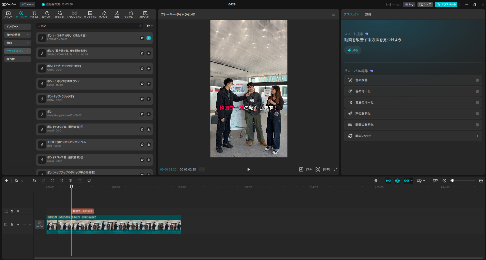
① サウンドエフェクト
② 「ポン」で検索
③ ＋で追加
【スクショ：サウンドエフェクト検索画面】
2
タイムラインに追加された効果音クリップをドラッグしてシーン切り替えのタイミングに合わせる
【スクショ：タイムラインに効果音が追加された状態】
💡
使い分けの目安：場面切り替え → 「ポン」系 ／ テキスト出現 → 「シュッ」「ポップ」系 ／ 料理・食べ物ワード → そのイメージに合った音
動画の種類別 音量の目安
インタビュー動画
セリフを聞き取りやすくするため小さめに
イベント告知動画
明るい雰囲気を作るため少し大きめに
vlog・活動記録
映像に合わせてメリハリをつける
💡
islaではトランジションタブは使わず、キーフレームで手動にズーム・スライドを作っています。
① ズームイン（人物にクローズアップ）
1
カットしたいシーンでCtrl+Bで分割 → ズームインしたいクリップを選択
2
右パネルの「スケール」スライダーを右に動かして拡大（200〜400%が目安）
【スクショ：スケール308%でズームインした状態】
② スライド（横に流れる移動）
📌
スライドは「スタート地点のX値」と「終点のX値」の2つのキーフレームを打つだけ！CapCutが間を自動で補間してくれます。
1
スケールを300%前後に拡大してから、タイムラインのスライド開始点に再生ヘッドを合わせる
2
右パネル「位置」のX値を設定（スライドの始まりの位置）→ 「位置」の行にある ◇マーク をクリックしてキーフレームを打つ
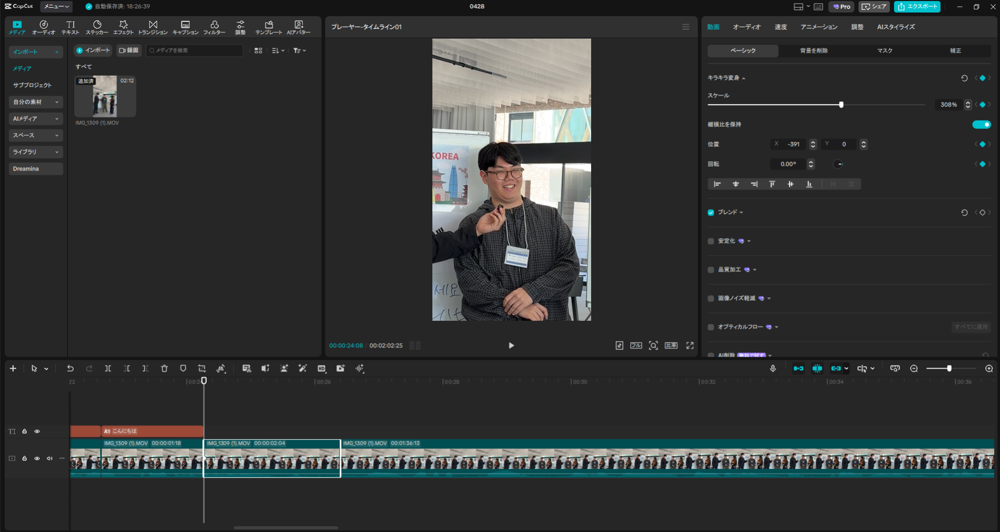
スケール 308%
位置 X: −391 → ◇で打つ
① スタート地点に再生ヘッド
ステップ①②：スタート位置でキーフレームを設定した状態（X: −391）
3
タイムラインでスライドの終点に再生ヘッドを移動→ 「位置」のX値を変更するだけで自動でキーフレームが追加されスライド完成
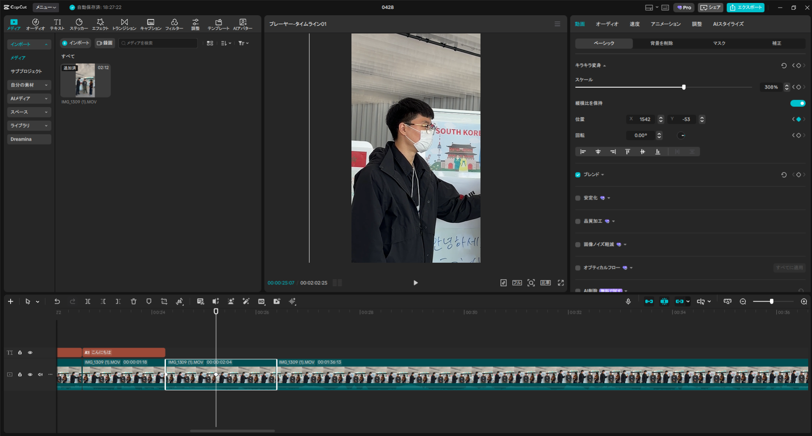
スケール 308%（そのまま）
位置 X: 1542 に変更
② 終点に再生ヘッドを移動
ステップ③：終点でX値を変えると自動でキーフレームが追加される（X: 1542）
⚠️
スケールが小さいまま位置を動かすと映像の端が見えてしまいます。スライドを使う場合はスケールを300%以上に拡大してからX値を調整してください。
仕上げフェーズ — STEP 09 〜 13
🎓 コネマグ — isla × Connect
編集お疲れ様！最後は書き出しと仕上げだよ。ここをちゃんとやれば完成動画がSNSにそのまま投稿できるよ🎬✨
1
右上の「エクスポート」をクリック
2
設定を確認して「エクスポート」ボタンをクリック
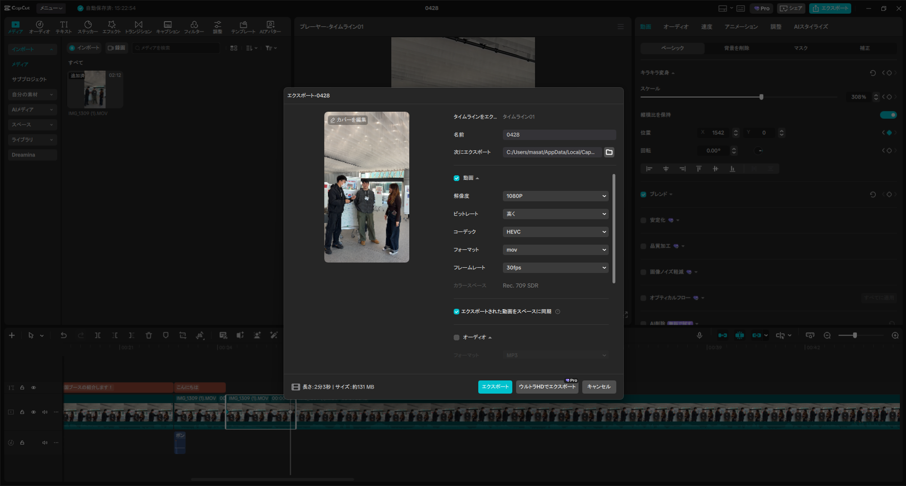
解像度
フレームレート
エクスポートボタン
【スクショ：エクスポート設定画面】
| 設定項目 | 推奨値 | 備考 |
|---|
| 解像度 | 1080p | SNS投稿の標準 |
| フレームレート | 30fps | 通常の動画はこれでOK |
| フォーマット | mov / MP4 | どのSNSでも使える |
💡
容量を小さくしたいときは解像度を720pに下げてOK。書き出し後はGoogleドライブの共有フォルダにアップロードしてチームで共有しましょう。
💡
テキストやロゴがいいね・コメントボタンに被っていないかを編集中に確認できます。書き出し前に必ずチェックしましょう。
1
プレビュー画面の下部ボタンをクリック→ 「TikTok」「Instagramリール」などを選ぶ
【スクショ：プラットフォーム選択メニュー】
2
プレビューにSNSのUIが薄く表示される→ いいね・コメント・シェアボタンの位置にテキストが被っていないか確認する
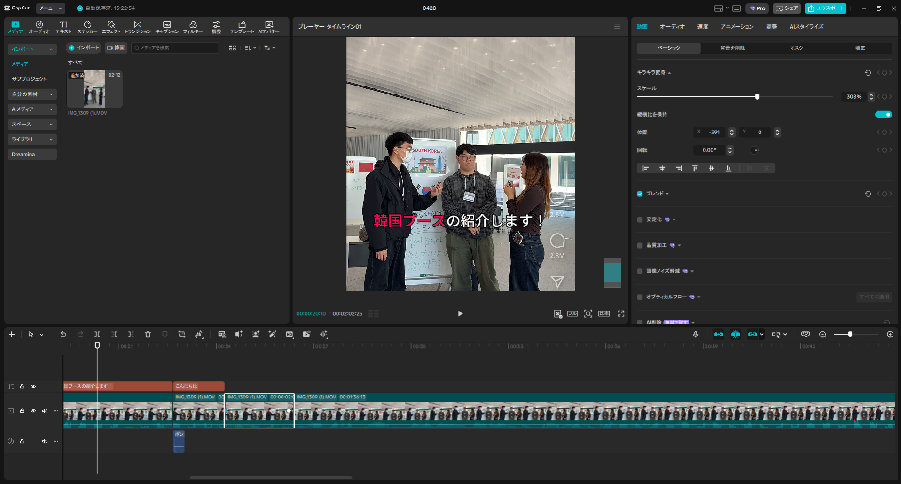
いいね・コメント位置
アカウント名エリア
【スクショ：Instagramリールのセーフゾーン表示】
3
テキストやロゴの位置を調整しながら編集。確認が終わったら「なし」に戻してOK
【スクショ：セーフゾーンを確認しながらテキスト編集】
💡
セリフを手打ちする手間が大幅に省けます。精度は高いですが、固有名詞などは後で修正してください。
1
上部メニューの「キャプション」をクリック→ 「自動キャプション」を選択
2
「話されている言語」を「日本語」に設定→ 「2か国語キャプション」で翻訳先を選ぶ（不要なら「なし」）
3
「生成」ボタンをクリック→ 自動で字幕が追加される
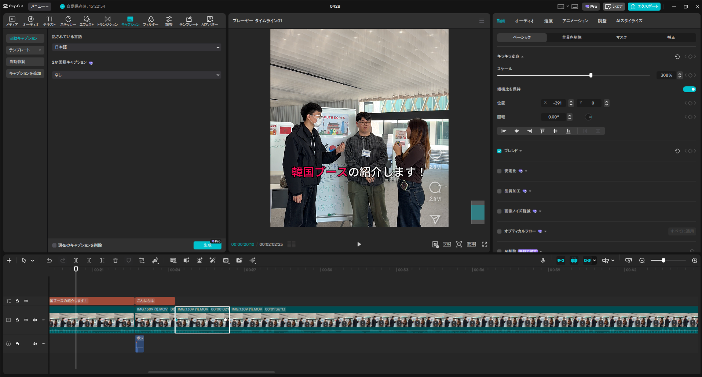
① キャプションをクリック
② 言語を選ぶ
③ 生成をクリック
【スクショ：自動キャプション設定画面】
⚠️
生成後はタイムラインに字幕クリップが追加されます。必ず1つずつ読み直して修正してください。
生成後 — 字幕スタイルを白に統一する
4
タイムラインの字幕クリップを全選択→ 右パネル「テキスト」タブ →「色」を白（#FFFFFF）に変更→ 縁取りも白か黒に統一する
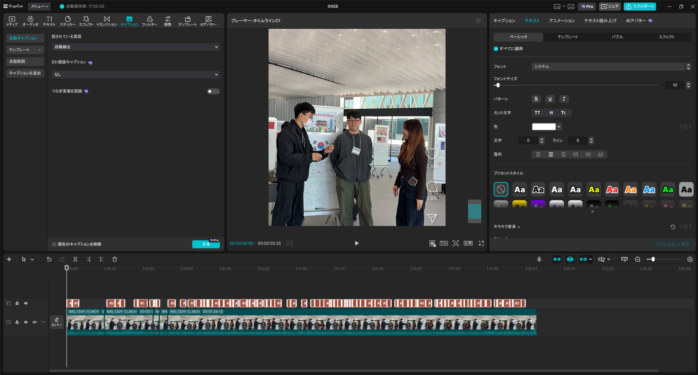
テキストタブ
色を白に変更
プリセットスタイルも使える
【スクショ：キャプションのテキストスタイル設定画面】
生成後の修正チェックリスト
- 固有名詞（地名・料理名・人名）が正しく認識されているか確認する
- 1つの字幕に長いセリフが詰まっている場合は、読みやすい位置で分割する
- 句読点・「が・は・も」など助詞の前後で自然な区切りになっているか確認する
- 字幕が映像のセリフとズレていないか、再生しながら確認する
POINT — islaフィードバックより
「自動字幕は生成後に、読みやすいよう修正してほしい」というフィードバックがあります。生成そのままで使わず、必ず見直し・修正をセットで行うのがislaのルールです。
💡
カットや字幕の位置をミリ単位で合わせたいときは、タイムラインを拡大すると作業しやすくなります。
1
タイムライン下部のスライダー（ − ▬ + ）を右にドラッグ→ タイムラインが拡大される
【スクショ：タイムライン拡大スライダー】
2
拡大された状態でカット位置を確認・調整する。左右にスクロールしてクリップを移動できる
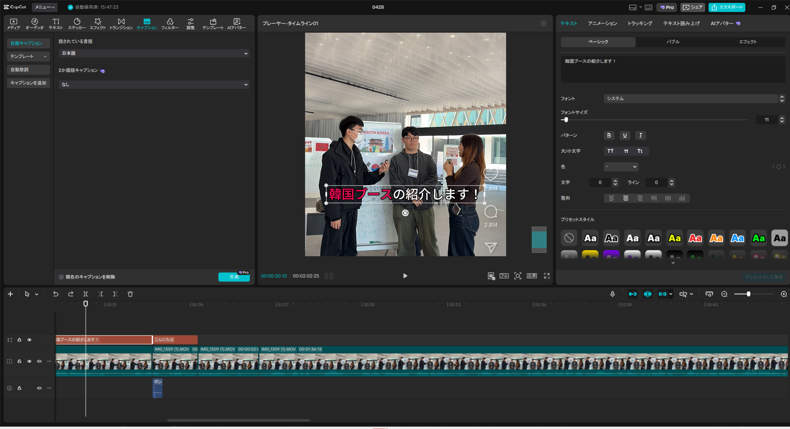
字幕クリップが細かく見える
【スクショ：タイムライン拡大後の表示】
3
全体を確認したいときはスライダーを左に戻して縮小Ctrl + マウスホイールでも拡大・縮小できる
【スクショ：タイムライン全体表示】
💡
「Connect」ロゴを動画の隅に重ねることでブランド感が出ます。透明度を下げると自然に溶け込みます。
1
上部メニューの「メディア」をクリック → 「インポート」でConnectロゴのPNGファイルを読み込む
2
メディアパネルに表示されたロゴを、タイムラインの空白トラック（映像の上）にドラッグして重ねる
3
プレビュー画面でロゴをドラッグして右下や右上に配置 → ロゴの角をドラッグしてサイズを調整する
4
右パネルの「ベーシック」→「不透明度」のスライダーを動かして透明度を調整（70〜80%が自然に見えやすい）
⚠️
ロゴクリップの長さを動画全体と合わせること。短いとロゴが途中で消えてしまいます。ロゴクリップの右端をドラッグして長さを伸ばしてください。
POINT
ファイル形式は背景が透明なPNGを使うこと。JPGだと白背景ごと表示されてしまいます。
サポート
| 修正依頼の内容 | 原因 | 対処法 |
|---|
| 「字幕の色が多すぎる」 |
登場人物ごとや感情ごとに色を変えすぎている |
文字全体を白に統一。色を変えるのはキーワード（料理名・地名）のみ、赤か黄の2色まで |
| 「字幕が読みにくい」 |
1つの字幕に長いセリフが詰まっている・縁取りがない |
自然な区切りで字幕を分割する。縁取り（ストローク）を白または黒に設定する |
| 「自動字幕が違う言葉になってる」 |
固有名詞・方言の誤認識 |
字幕クリップをダブルクリックして手動で修正する |
| 「カット切り替えのタイミングがズレてる」 |
発話の途中でカットされている |
タイムラインを拡大（STEP12参照）して、セリフの終わりに合わせてカット位置を調整する |
| 「効果音のタイミングが合ってない」 |
効果音クリップの位置がズレている |
タイムライン上で効果音クリップをドラッグして、シーン切り替えの瞬間に合わせる |
| 症状 | 対処法 |
|---|
| 動画に音声がない | 音声クリップを右クリック →「ミュート解除」 |
| 文字が動画からはみ出る | プレビュー画面でテキストをドラッグして位置を調整 |
| 書き出した動画が重い | エクスポート時に解像度を720pに下げる |
| 操作を間違えた | Ctrl + Z で元に戻す |
| アプリが固まった | 保存してからCapCutを再起動 |
✅ 書き出し前 最終チェックリスト
- カット編集で不要な部分を削除した
- テロップの文字・フォント・色を確認した
- 効果音のタイミングが映像に合っている
- 最初から最後まで通して再生した
- セーフゾーンでいいね・コメント位置を確認した
- 解像度1080p・mov/MP4で書き出した
- Googleドライブの共有フォルダにアップした
💡
InstagramリールやTikTokのサムネイル（表紙画像）は、Canvaで別途作成してください。CapCutの書き出し画面からもサムネ設定はできますが、デザイン性を出したいときはCanvaが◎です。
| ツール | 用途 |
|---|
| CapCut | 動画の編集・書き出し |
| Canva | サムネイル（表紙画像）のデザイン作成 |
作成したサムネはGoogleドライブの共有フォルダに保存して、チームで共有しましょう。
🌏 慣れてきたら、もっと上を目指そう
このマニュアルはisla・Connectのボランティアメンバー全員を対象に作成しています。基本操作に慣れてきたら、過去のisla動画や他のサークル・インフルエンサーの編集スタイルを参考にしながら、自分なりの表現を見つけていきましょう。
-
→
過去のisla動画を見て、カット・テロップ・効果音のタイミングを研究する
-
→
TikTok・Instagramで気になった動画の編集手法をCapCutで再現してみる
-
→
ボランティア活動・国際交流イベントなど、動画の種類に合わせてスタイルを使い分ける
-
→
分からないことがあれば広報チームに気軽に聞いてください
🎓 コネマグ — isla × Connect
最後まで読んでくれてありがとう！
最初はうまくいかなくても全然OK。何度でも作ってみることが一番の近道だよ💪
islaの動画、一緒に最高のものにしていこう🎬